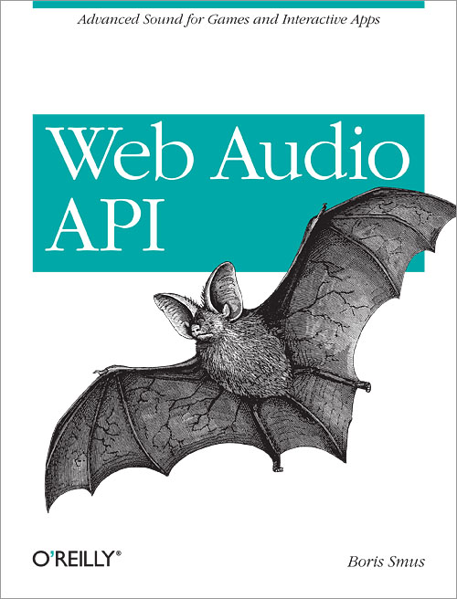

Web Audio book
I wrote a short book about the Web Audio API. The book is meant as an introduction to the web audio API, as well as some audio basics for web developers with little audio experience. It is available for free on Chimera, a web-based book viewer, which presents a nicely laid out page and lets you leave per-paragraph comments. The online version also includes inline samples from webaudioapi.com. If you don't like reading on the web, you can also buy a physical copy or an ebook from O'Reilly.
So I got this cool bat on the cover. I am told that technically speaking, it is a brown long-eared bat (Plecotus auritus). Though it's no orca (an ideal O'Reilly cover, don't you think?), I'm very happy that it's a sound related animal.

The book was written on my laptop in a Google Doc. I hand-drew some illustrations in a notebook and brought them into the doc. Once I was ready for feedback, I sent the doc around to my technical reviewers, who left feedback in comments. After incorporating their feedback, I got some editorial feedback, still in the doc. Once the draft was more or less ready to go, I created an oDesk task to convert the Google Doc into docbook.xml format. The contractor did a great job and charged me about $100. This was my first time paying anyone to do work for me.
Thanks to all of the reviewers, editors, illustrators and organizers for helping. Also, thanks to Kevin Ennis who kindly donated the webaudioapi.com domain which I'm currently using to host the samples.